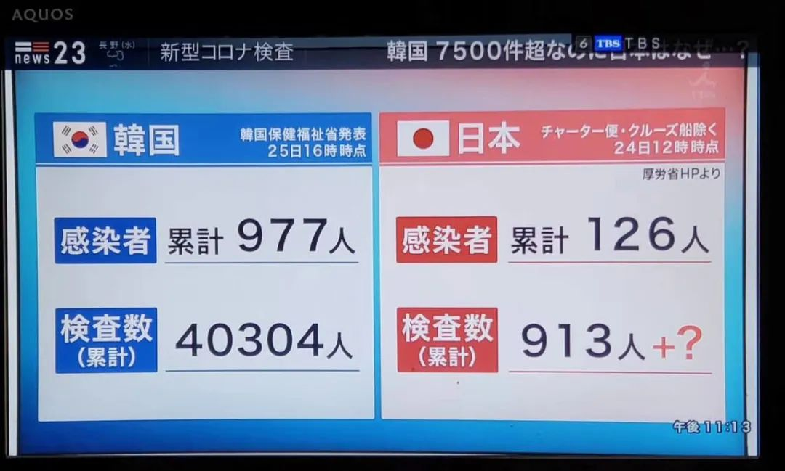
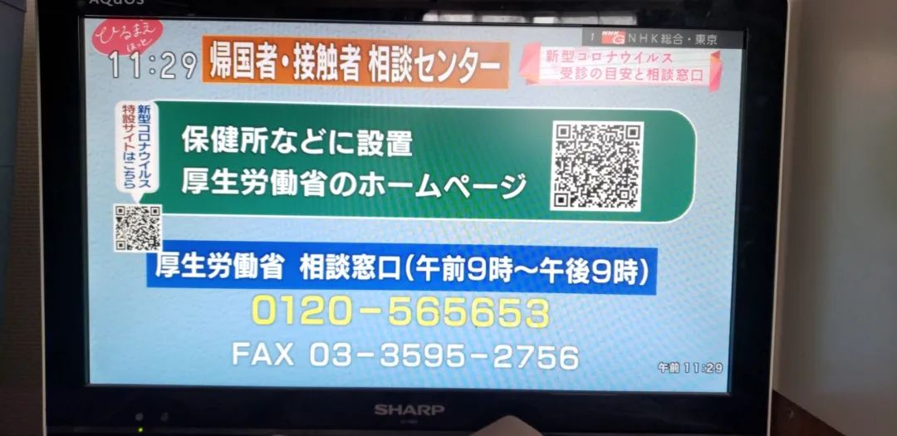
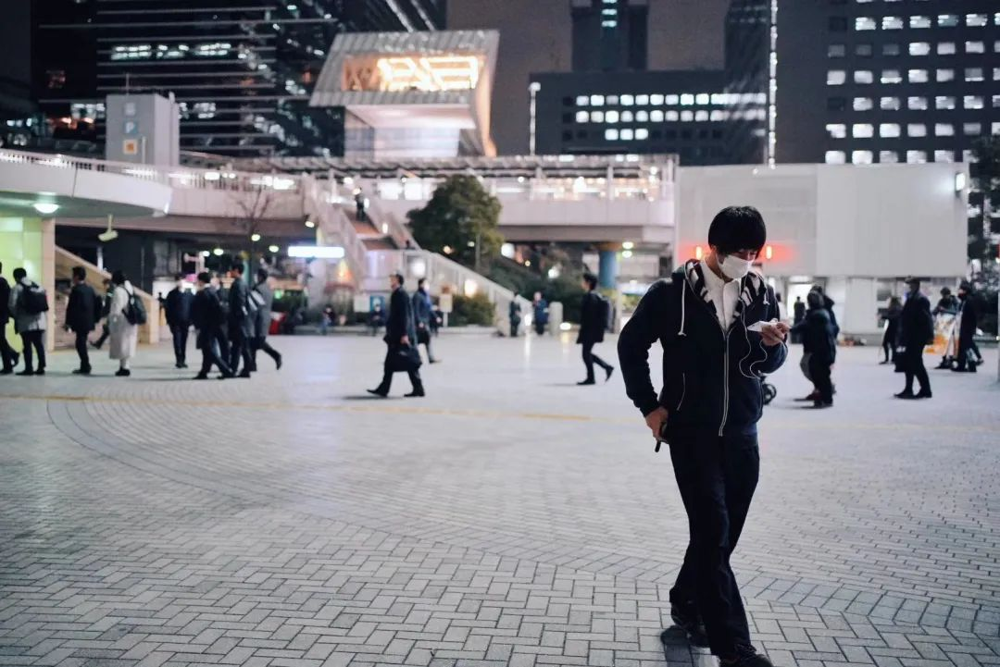
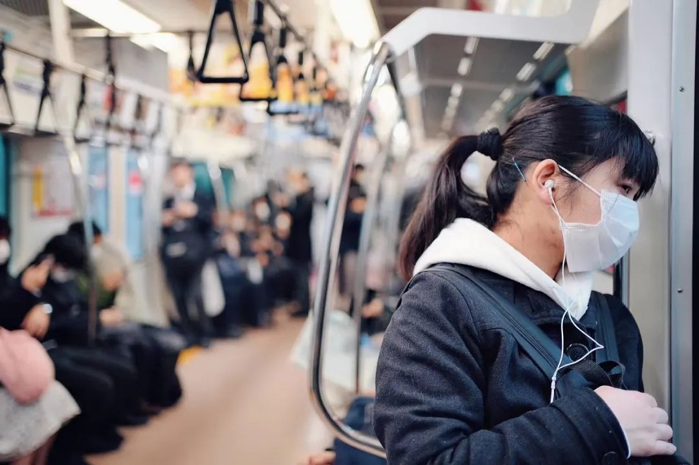

日本疫情蔓延，东京奥运会还能如期开吗？
原文链接 备份链接 按照原计划，今年奥运圣火传递活动将在3月12日从希腊开始，3月26日来到日本，7月24日东京奥运会将开幕，这些安排会否受到影响，取决于日本政府对于疫情的控制 2020年2月15日，东京奥运会圣火传递大使石原里美（右）在 …
澎湃新闻记者 张无为
近期，日本与韩国相继因国内疫情发展处于其国内及全球舆论的风口浪尖，两国不同量级的新增确诊人数受到关注。
2月25日，日本TBS电视台报道罗列了两张数据对比图，图表显示，自2月18日以来，日韩两国使用试剂进行新冠病毒检测的基数大不相同。
截至当地时间2月25日16时，韩国确诊感染人数为977例，日本国内确诊感染总数累计126例。但是相对应的，韩国进行了试剂检测的人数累计达40304人，而日本的检查人数仅为913人。


日本TBS电视台播出的日韩新冠病毒检测数据对比图，图片来源：受访者沈霄虹
与此同时，“检测无门”的呼声在日本社会上出现。
一名在日本东京上智大学留学的中国女生本周早些时候连日发微博抱怨，称自己连续高烧7日，CT影像显示高度疑似新冠肺炎，但是没有机会去做核酸检测，医院开了药让她自己回家，如果4天后病没有好再复诊。
日本一位四个孩子的母亲21日在推特上发文，称儿子连续发烧咳嗽6天，去地区保健所要求医生给孩子进行新冠肺炎检测但被拒绝，理由是不在检测对象范围内。根据她的说法，日本厚生劳动省列出的检测对象标准是：医生判断病情严重，或有湖北旅行史，或者接触过确诊患者的，才能够做新冠病毒的检测。

一位日本妈妈在推特上发文求助
继被指“钻石公主”号邮轮应对失当后，日本政府对国内本土疫情的防控措施再次受到各方质疑。
截至当地时间2月27日上午8时，日本确诊的新冠肺炎感染者已经累计达894人，其中包括在日本国内的感染者175人，“钻石公主”号邮轮的乘客和工作人员705人，以及乘坐日本政府包机回到日本国内的14人。
重症才能做核酸检测？
在上智大学取得新闻学博士学位后留校任教的沈霄虹25日就看到了上述社交媒体的求助信息，让她尤为揪心的是，日本朝日电视台25日晚打电话给那位在推特上求助的日本妈妈时，这位妈妈连续发烧的长子仍旧没有被医院收治检查。
“妈妈急坏了，保健所的人跟这个妈妈说重症才能检查，重症就是要戴上呼吸机。”沈霄虹告诉澎湃新闻（www.thepaper.cn）。
沈霄虹还了解到，在微博发文的上智大学女生虽然通过学校到医院做了检查，烧也退了，但是仍然没能接受核酸检测。
“医生向保健所要求核酸检测，是否可以接受检测需要得到保健所同意，只有达到政府的要求的人，保健所才能对其发放试纸。”沈霄虹说。
2月26日，日本厚生劳动大臣加藤胜信在国会发言中称，2月18日至24日期间，日本平均每天为约900人次进行新冠病毒检测。这一实际检测数字远低于此前强调的最大检测能力的3830次。
据日本放送协会（NHK）25日报道，政府称“每日可对3830人进行核酸检测”，其中包括地方的卫生研究所每天可检测1800人，5家民间检测机构900人，公立的检疫所和国立感染症（传染病）研究所每天分别可做580人和400人份检测，各大学的医学院每天能做150人份。

日本电视台播出的日本“一日可进行的核酸检测数量”，图片来源：受访者沈霄虹
对于检测数量少，加藤胜信解释称，这是因为初期的检测能力主要集中于乘包机归国人员。但加藤胜信的发言和实际检测数量远少于最大检测能力的现状，受到了在场在野党议员的质疑。
据《日本时报》报道，加藤胜信坦承，他听说过一些公共卫生中心拒绝进行（新冠病毒）测试要求的事件。他表示，日本卫生部门将调查情况。
除了日均病毒检测数量低下，繁琐的就诊流程也为患者的及时就医设置了门槛。据了解，目前日本公共卫生系统都遵照厚劳省的指南来运行。在厚劳省给出的就诊指引上，官方建议体温37.5度以上、持续发烧4天、有强烈的倦怠感或呼吸困难的人，才需要到医院进行相关检测。去医院前需先给归国者及接触者咨询中心打电话咨询，咨询过后如果确实有需要检测，还需要到指定医院（才能检测），此外还检测还必须得到公立的保健所同意。
“保健所” 是日本公立的医疗机构，主要为地区居民提供医疗咨询和公共卫生指导，是地区应对疫情的中枢机构。根据日本政府此前公布的政策，所有新冠肺炎确诊患者的治疗费用都将由日本政府承担。

日本厚生劳动省公布的咨询电话，图片来源：受访者沈霄虹
2月25日，日本政府公布了新的《新冠病毒传染病对策的基本方针》（以下简称《方针》），这一文件虽然指出未来一两周将是日本防控疫情的关键期，并提出了许多防疫举措，但也提到，如果未来“各地患者数持续增加”，将修改相关要求，只有“对需要入院的肺炎患者进行治疗时”才进行核酸检测。
《方针》同时警告，如果未经事先商量就直接前往医疗机构就诊，则有可能提高感染风险。
《方针》的出台意味着，如果日本疫情明显扩大，日本国内的核酸检测“门槛”将进一步抬高。
《环球时报》援引《日本经济新闻》26日的社评称，该《方针》的基础是，日本专家会议认为“不可能完全防止个人感染新冠病毒”，而是应尽可能减少重症和死亡患者。
上海外国语大学日本研究中心研究员须军接受澎湃新闻采访时表示，日本可能将进行核酸检测的门槛提高，是想通过 “少检测少确诊”的方式减小疫情的“动静”。“减小动静一方面是因为日本政府可能没有充分认识这种疫情的严重性，另一方面就是想尽量保住奥运、保住经济。”

日本东京街头，图片来源：@阿E不是阿姨
争议四起，市长驳网友：少看新闻健康度日
《方针》公布后，要不要扩大核酸检测成为了社交媒体上日本网友热议的话题。
2月26日，此前发视频批评“钻石公主”号邮轮船处置措施混乱的日本著名传染病学家岩田健太郎发布了一则推文称，很多人向他反映自己被拒绝核酸检测。但是他认为，也应该理解“不做核酸检测反而更好”这种建议，因为检测也可能会不准确，可能会搞错，最重要的是，很多轻症患者是不需要入院检测的。
这一次，岩田的观点与日本政府的立场几乎一致。岩田还表示，检测和医疗资源都是有限的，“必须最大程度活用，让医疗资源时刻保持充分的状态。”
岩田的话一石激起千层浪，在这条推特的评论区里，许多人发表了不同的观点，也有政客亲自“下场”为新政辩护。千叶市长熊谷俊人回复一名希望扩大核酸检测范围的网友称，核酸检测不是万能的。对于一些建议扩大核酸检测范围的声音，熊谷俊人反驳称，“不说明核酸检测（能力）的极限，也不附证据说明什么时候应该使用核酸检测，这种随便叫嚣要求扩大核酸检测范围、自称专家或政治家的人还是不要相信为妙。”
熊谷的回复得到上万人转发和点赞，并被日本网友称赞“看看人家的市长”。但也有不少人不同意他和岩田的意见。网友@ puripri72在评论区中反问道：“即使医生认为有必要进行检查，但如果保健所认为没有必要，就不能进行核酸检测，那病人该怎么办？如果无法确诊得了什么病，也无法对症下药。”

日本东京地铁，图片来源：@阿E不是阿姨
日本网友“红豆”也表示，“如果我和我的家人有任何症状，不管有没有感染（新冠病毒），我都希望进行检测……因为我不想让自己珍视的人成为其中一个死亡病例，所以无论如何也想进行一下检测。”
熊谷俊人则回复“红豆”称，“如果你理解医疗现场诊断、取样和检测的负担，你就会明白，为了消除焦虑而浪费医疗资源是多么没有意义。我理解你的不安，少看一些有关新冠肺炎的新闻，健康度过每一天，注意预防传染病，提高免疫力是最好的选择。”
崇尚如此“佛系”抗疫的并非只有熊谷俊人。早在2月15日日本《读卖新闻》的一则新闻中，就有专家表示，“像对待流感一样对待新冠肺炎，就是最好的预防方式。”
但熊谷的这一番话，也引来了网友的质疑：如果熊谷说的有道理，那么，“其他国家为什么要积极检测呢？”
日本的医疗体系的掣肘
事实上，在这场围绕是否应该扩大检测规模的争议背后，还有日本现有医疗体系的掣肘。
“日本人平时看病去附近的小诊所比较多，不会都去大的综合性医院，（医院）能够收治传染病患者的容量的确比较小。”须军分析称，收治能力不足制约了日本政府的检测政策，“因为专用传染病床位有限，所以如果（病毒检测）门槛低了，轻症确诊了，放到哪里去呢？疑似的到普通门诊去就医，不是可能把医务人员也感染吗？”
在这种情况下，日本出现了多起就诊难、辗转多家医院才能确诊的事例。据日本共同社报道，北海道一名女生22日自行叫了救护车，当急救人员将她送院时，她已经无法清楚说话。23日，她被确诊为新冠肺炎。熊本市的一名女护士17日出现咳嗽的症状，18日在市内的一家医院就诊，此后持续咳嗽和发烧。辗转另一家医院就诊后，她最终于21日接受核酸检测，确诊感染了新冠病毒。
上海外国语大学日本研究中心主任廉德瑰指出，“日本医疗体系以私立医院为主，同时公立资源有限，日本政府不可能强制命令（私立机构）。就连大型集会的限制也只能说‘要求’而不是‘禁止’。”廉德瑰称，日本政府没有权力命令和要求私立医院（接诊新冠肺炎患者），这是日本的情况。

日本东京地铁，图片来源：@阿E不是阿姨
相比之下，同属新冠肺炎疫情严峻地区的韩国和新加坡则采取了更强的应对措施。
在疫情爆发后的第一时间，韩国宣布疫情严重地区为“传染病特别管理地区”，总理坐镇指挥。26日，韩国国会通过“新冠肺炎三法”，具体包括《传染病预防法》、《检疫法》和《医疗法》三法部分修正案，“三法”加强了行政部门应对疫情的权限与力度。此外，韩国还将疫情预警上调至最高级别“严重”。
新加坡也实行了严苛的规章——所有出现症状的病人先去家庭医生和社区诊所求诊，然后休5天病假。一般流感5天就会自愈，5天内没自愈的，就有可能是新冠病毒感染，患者需要再去同一个诊所，让医生诊断是否有必要送去医院确诊。同时，确诊病例的密切接触者和其他高风险人员也需接受严格的居家隔离，若违反隔离规定，则将面临丧失永久居民身份等严厉处罚。

日本东京街头，图片来源：@阿E不是阿姨
应对质疑声，日本政府也试图作出改善。25日公布的《方针》也称，在患者大幅增加的地区，将在普通医疗机构划分接诊时间和通道，接收疑似患者。但是政府尚未出台相关政策指导如何采取具体措施。
此外，日本政府还在《方针》中指出，主要要把（医疗）资源留给重症患者和老年人。对此须军评论称，“日本政府能用的手段有限，只能寄希望于疫情不要大爆发。”
沈霄虹则更直接地批评称，“从政府公布的《方针》中发现，应对此次疫情，日本政府的做法完全脱离现实。”她告诉澎湃新闻，之前出现的无法就医或检测的情况基本上是政府的错误指示导致的。“政府完全没有重视这件事，政策前后矛盾。”
在沈霄虹看来，日本政府似乎觉得“这个病毒不厉害”，因而在医疗和医生药物都充足的情况下，政府过度考虑了经济预算和政治性问题。“政府考虑的是不要让医疗机构体制‘崩坏’，而没有顾及国民的生命。“沈霄虹说。

涩谷街头，图片系视频截图，来源：宫下先生
变化正在发生
26日，此前发微博的上智大学的女生体温已恢复正常，她去医院接受检查后，被诊断为急性支气管炎。
日本人的生活似乎也“一切如常”。
24日，刚刚在国内结束了半月有余的“家里蹲”的阿龙（化名）给自己的日本朋友打电话，劝说其戴口罩无果；阿雯（化名）也劝说自己在日本的朋友不要去参加两天后的婚礼，却被朋友拒绝，说她过度恐慌。
但是，变化也正悄然发生。
25日，一位在东京上班的中国人告诉澎湃新闻，公司为应对新冠肺炎疫情，将上下班时间调晚了一小时，从9:30-18:30调整到10:30-19:30。现在正是日本学校的毕业季，多所学校都取消了毕业典礼，改为其他形式举办。
在东京工作的宫下先生为澎湃新闻拍摄的一段视频显示，26日，东京涩谷著名的十字路口，上班的、逛街的男男女女中已经有超过一半人戴起了口罩。宫下先生表示，“商店都开着，大家还在正常工作，不过听说有些公司有要求员工在家上班。”
“感觉大家都担心疫情，不过能做的只能戴口罩和洗手了。”宫下先生说。

涩谷的十字路口，图片系视频截图，来源：宫下先生
核酸检测的批准权力，也即将从保健所下放到各个医院。日本政府25日公布《方针》中提到，就诊者目前是否进行核酸检测，将由各地医疗机构的医生判断。沈霄虹27日告诉澎湃新闻，从下周开始，一般医院和诊所如果认为有必要，就可以通过日本的各个检测机构进行核酸检测，患者不再需要得到保健所的批准，也不会再出现医生认为需要检测而保健所不同意的情况，但检测费用不是由国家全额支付，患者自己需要付10%至30%左右。加藤胜信27日在众院预算委员会会议上则表示，新冠病毒检测最快将于下周适用公共医疗保险。
日本政府25日表示，已研究出一种快速检验是否感染新冠病毒的技术，15分钟就可以出结果，如果经测试其效果和目前使用的方法一样好，可能在下个月就投入使用。共同社27日发布的调查显示，东京都地区通过委托民间机构以及增加购买设备等手段，每天核酸检测能力从120人份增至约340人份。
日本普通医院增加病床、改造隔离病房的工作，也正在进行中。不过，共同社27日的汇总数据显示，日本全国的47个都道府县中，仅有16个都府县已经确保（或预计能够确保）增加病床数量。
（澎湃新闻实习生刘宇锟对本文亦有贡献）
本期编辑 常琛
推荐阅读


原文链接 备份链接 按照原计划，今年奥运圣火传递活动将在3月12日从希腊开始，3月26日来到日本，7月24日东京奥运会将开幕，这些安排会否受到影响，取决于日本政府对于疫情的控制 2020年2月15日，东京奥运会圣火传递大使石原里美（右）在 …
原文链接 备份链接 大家新闻里总是听到“核酸检测试剂盒”这个东西，试剂盒里的试剂自己不能判断阴性阳性的，这些试剂要放到我负责的核酸检测设备里，才能得出检测结论。 口述 | 彭 鑫 整理 | 黄 祺 现在大家说起去湖北，都感到非常恐惧。但因 …
原文链接 备份链接 【财新网】（记者 黄姝伦 方祖望）在广东，只要踏进发热门诊的大门，就要接受核酸检测，排查是否感染了新冠肺炎。2月12日，广东省疫情发布会上，省卫健委副主任陈祝生称，全省发热门诊启动患者核酸检测排查，范围扩大至全员。 …
原文链接 备份链接 澎湃新闻记者 于潇清 近日，韩国和日本新冠肺炎疫情防控形势日趋严峻，引起国际社会关注。 据韩国中央防疫对策本部2月28日最新通报，截至当天上午9点，韩国再新增新冠肺炎确诊病例256例，累计2022例，死亡病例达13例。 …
原文链接 备份链接 一开始意大利人觉得病毒来自中国，害怕中国人 现在意大利人病例多了，华人反过来怕意大利人 2月25日，意大利总理孔特在民防部主持防疫工作会议。图片来源：意大利总理府官网 意大利伦巴第大区首府米兰以南约70公里，圣菲奥拉诺 …